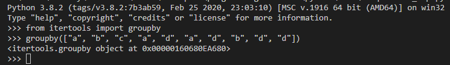
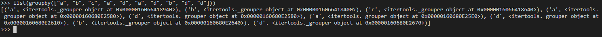
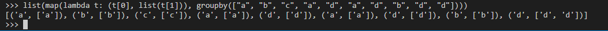
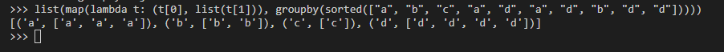
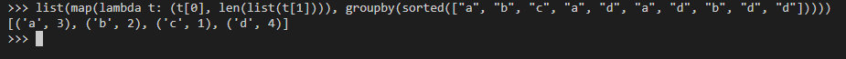
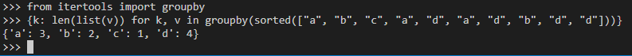

Tableau de fréquences en Python
Contenu
Il y a quelques temps j’ai publié un billet sur les tableaux de fréquences en Java avec les streams. Faisant un peu de Python en ce moment, je me suis demandé comment je pouvais le faire en Python de manière idiomatique (ou du moins d’une manière qui me semble idiomatique en Python).
Pour rappel, je traduis ici par tableau de fréquences l’expression anglaise de frequencies map. Vous avez une liste d’éléments et vous voulez pour chaque élément connaître sa fréquence (le nombre de fois où cet élément est présent dans cette liste). Ainsi à partir de cette liste d’éléments, vous désirez obtenir un tableau associatif dans lequel chaque clé est un élément de cet liste et est associé à sa fréquence dans la liste.
La problématique
On a une séquence d’éléments qui peuvent se répéter, on souhaite avoir pour chaque élément sa fréquence, c’est-à-dire le nombre de fois que cet élément apparaît dans la séquence. Par exemple pour la séquence d’élément a, b, c, d, a, d, a, je souhaite obtenir l’information que l’élément a apparaît 3 fois, les éléments b et c apparaissent 1 fois et l’élément d apparaît 2 fois.
Si je traduis cela en Python avec une spécification sous forme de test cela me donne :
|
|
L’utilité du dernier test sur une liste d’éléments non-triés se verra un peu plus tard quand on regardera les manières non classiques de le faire.
Une solution impérative
Une manière classique de résoudre ce problème en Python et dans d’autres langages est de parcourir la séquence d’éléments et de compter leurs occurences. Nous allons stocker au fur et à mesure le résultat dans un dictionnaire, avec bien sûr la nécessité de vérifier si l’élément si trouve déjà ou pas.
Ci-après une proposition d’implémentation de la fonction en Python.
|
|
Rien de compliquer en soit : une boucle for pour parcourir les éléments de la liste et à l’intérieur de cette boucle une alternative if-else pour remplir le dictionnaire.
Détour par itertools
Python permet d’utiliser tant un style impératif qu’un style plus fonctionnel. Tout comme pour mon billet sur le même thème en Java, j’ai essayé de voir ce que pouvait me proposer la bibliothèque standard de Python. Dans l’excellente petite introduction à la programmation fonctionnelle en Python David Mertz indique que le module itertools de la bibliothèque standard de Python regorge de fonctions pour faciliter la manipulation des itérateurs et des itérablesréaliser des boucles dans un style plus fonctionnel plus facilement.
Cependant avant d’en venir au fait, un détour dans le détour, pour parler des itérables et des itérateurs.
Itérables et itérateurs
Un itérable en Python est une abstraction représentant un séquence d’élements qui est capable de retouner un élément à la fois. A partir d’un itérable, on peut créer un itérateur qui est cette fois-ci l’abstraction de l’itération elle-même : un itérateur représente un flux de données avec lequel on peut intéragir avec une méthode spécifique pour obtenir l’élément suivant de ce flux. L’itérateur est une vue ou un curseur qui permet de parcourir un itérable sous-jacent.
Itérables, rassemblement !
Après un peu de recherche dans les fonctions mises à disposition dans le module itertools, je suis tombé sur la fonction groupby qui me semblait pouvoir être exploité pour résoudre mon problème.
groupby prend en entrée un itérable et un paramètre optionnel qui correspond à une fonction keydont l’objet est de générer une clé pour chaque élément. Si cette fonction n’est pas spécifiée ou si sa valeur est None, par défaut c’est une fonction identité renvoyant l’élément sans le modifier. Parfait, je n’ai pas besoin de plus. Faisons un essai dans l’interpréteur.
|
|
Le résultat n’est pas celui que j’attendais mais à la réflexion c’est normal : <itertools.groupby object at 0x00000160680EA680>

En effet, Python m’affiche l’adresse de l’objet qui est un itérateur, il ne sait pas me l’afficher directement, il faudrait que je le transforme en liste d’abord. Ok, on va faire çà.
|
|
C’est mieux mais ce n’est toujours pas cela : [('a', <itertools._grouper object at 0x0000016066418940>), ('b', <itertools._grouper object at 0x0000016066418400>), ('c', <itertools._grouper object at 0x0000016066418640>), ('a', <itertools._grouper object at 0x00000160680E2580>), ('d', <itertools._grouper object at 0x00000160680E25B0>), ('a', <itertools._grouper object at 0x00000160680E25E0>), ('d', <itertools._grouper object at 0x00000160680E2610>), ('b', <itertools._grouper object at 0x00000160680E2640>), ('d', <itertools._grouper object at 0x00000160680E2670>)].

Et même si ce n’est pas très lisible, je sens qu’il y a un problème. Pas grave, dans un premier temps améliorons l’affichage. Déjà on peut voir que l’iérateur retourné est un itérateur sur un tuple comportant la clé un un itérateur. Mettons à profit la méthode map avec une lambda pour améliorer ce qu’on voit. La lambda via la fonction map permet de transformer en liste le deuxième élément de chaque tuple de la séquence retournée par groupby.
|
|
Bon, déjà c’est un peu mieux mais ce n’est pas ce que j’espérais : [('a', ['a']), ('b', ['b']), ('c', ['c']), ('a', ['a']), ('d', ['d']), ('a', ['a']), ('d', ['d']), ('b', ['b']), ('d', ['d', 'd'])].

En lisant plus attentivement la documentation de groupby on peut lire que l’opération groupby :
Elle génère un nouveau groupe à chaque fois que la valeur de la fonction key change (ce pourquoi il est souvent nécessaire d’avoir trié les données selon la même fonction de clé). Ce comportement est différent de celui de GROUP BY de SQL qui agrège les éléments sans prendre compte de leur ordre d’entrée.
Ok, cela explique pourquoi j’ai ce résultat [('a', ['a']), ('b', ['b']), ('c', ['c']), ('a', ['a']), ('d', ['d']), ('a', ['a']), ('d', ['d']), ('b', ['b']), ('d', ['d', 'd'])] : pour les 2 derniers d qui se suivent, ils ont bien été regroupés mais sinon à chaque changement de valeur de la clé, un nouveau groupe a été créé. Bon, il faut donc trier la séquence avant d’utiliser groupby. Ok, trions notre séquence (avec sorted) et recommençons.
|
|
Cette fois-ci cela nous donne quelque chose que nous allons pouvoir exploiter : [('a', ['a', 'a', 'a']), ('b', ['b', 'b']), ('c', ['c']), ('d', ['d', 'd', 'd', 'd'])]

Nous allons juste faire une petite retouche : plutôt que d’avoir un tuple avec l’élément et la liste de ces occurences, ce qui nous intéresse c’est l’élément et le nombre de ces occurrences. Nous allons légèrement modifier la lambda à cette fin.
|
|
Parfait, c’est ce dont nous avons besoin, il faut juste transformer ce résultat en dictionnaire : [('a', 3), ('b', 2), ('c', 1), ('d', 4)].

En Python, si on crée un dictionnaire à partir d’une liste de tuples à 2 éléments, cela crée directement un dictionnaire dont les clés sont le premier élément du tuple et la valeur le second élément du tuple. C’est donc juste une petite modification sur l’expression précédente.
|
|
C’est exactement ce qu’on souhaite : {'a': 3, 'b': 2, 'c': 1, 'd': 4}.
Il nous reste à écrire les tests :
|
|
Puis finalement il nous mettre l’expression travaillée dans l’interpréteur sous forme de fonction :
|
|
Pour une bonne compréhension
Je préfère la solution précédente à la première solution imperative que j’ai proposée. Néanmoins en y regardant de près c’est pas encore le top de la lisibilité. Un développeur non familier avec un style fonctionnel risque d’avoir du mal à lire et comprendre ce que fait la fonction.
Comment pourrait-on améliorer le code pour améliorer sa compréhension ? Et bien justement avec une compréhension ! En python, en général là où il y a une boucle for, il peut y avoir une compréhension ; au minimum cela mérite de se pencher sur la question. Surtout que Python ne se limite pas au compréhension pour les listes, cela marche aussi avec les dictionnaires.
Cela ne devrait pas être compliqué : pour chaque pair de notre séquence groupby(sorted(elements)), je veux extraire la clé et la valeur associée. Je sais que cette valeur associée est une liste et ce qui m’intéresse c’est sa longueur. Essayons dans l’interpréteur !
|
|
Ok, le résultat est très exactement ce que nous recherchons : {'a': 3, 'b': 2, 'c': 1, 'd': 4}.

Il nous reste à écrire les tests.
|
|
Puis il faut que nous transformions notre expression en fonction.
|
|
Regard critique
La solution avec la compréhension tient en 1 ligne tout en restant lisible. Par contre, cette dernière solution et la précédente avec map imposent de trier la liste pour pouvoir exploiter groupby alors que la solution impérative n’a pas cette contrainte.
Il faudrait évaluer la performance des 3 fonctions par rapport à des listes de différentes tailles. Cela pourrait être l’objet d’un prochain billet d’ailleurs.
Je me suis également arrêté sur groupby mais il faudrait voir si je ne peux pas trouver une autre solution dans laquelle on n’est pas obligé de trier la liste (au final cela me chagrine un peu de devoir faire ce tri).
Bref, à travers ce billet, cela a été l’occasion d’explorer une petite problématique pour voir comment y répondre dans un langage que je suis en train de ré-apprendre. Cette première exploration permet déjà d’approfondir Python.
Je m’aperçois qu’il est fort agréable d’avoir une REPL pour explorer et expérimenter. C’est une habitude que j’ai prise lorsque je m’essayais à Clojure et qui est vraiment pertinente et complète bien une approche dirigé par les tests : je suis en train d’apprendre à programment à mon fils, et l’interpréteur pour expérimenter c’est vraiment pratique et efficace. Il faudrait vraiment que j’essaie d’utiliser un interpréteur de commande Python plus avancé et que je m’essaie aux Notebooks en Python ou des outils comme Colaboratory.
Je me rends également compte que je pensais partir pour un petit billet rapide mais que non seulement le billet n’est pas court mais en appel probablement d’autres.
Le code source est disponible sous forme de Gist.
Auteur TGITS
Modifié 2020-10-19